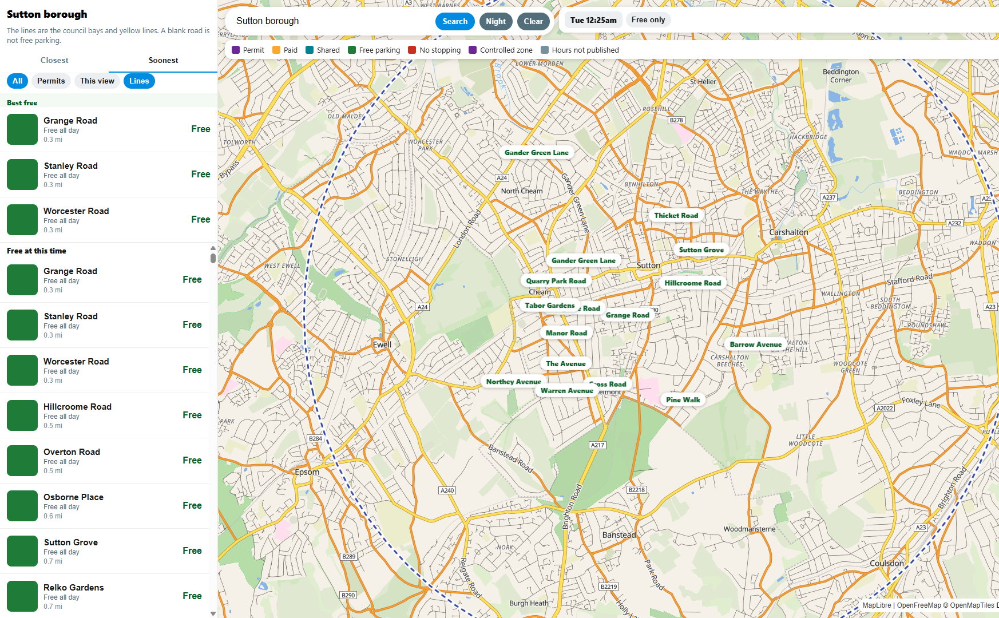

Kerb lines
- Camden
- City of London
- Epsom and Ewell
- Islington
- Kingston upon Thames
- Southwark
- Sutton
- Transport for London red routes
Published parking restrictions, read from the kerb. A blank road is not free parking.

The sign at the kerb wins. A gap between lines is not a free space. A zone shape is the controlled area, not a bay on every street.
Epsom and Ewell also marks some roads where the council file had no restriction line. That mark is only for those roads. Cardiff is a list of blue permit streets, and the hours stay on the sign. A few extra bays come from OpenStreetMap and do not fill a borough.